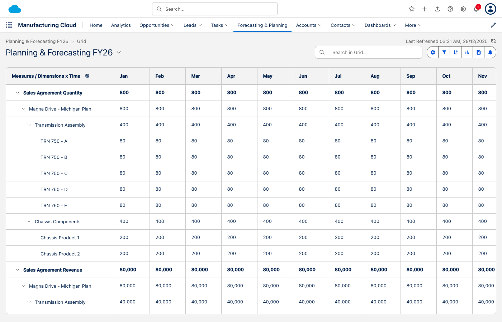
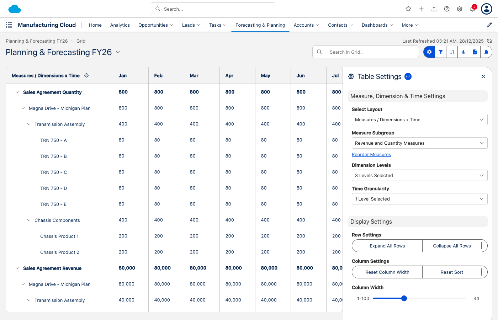
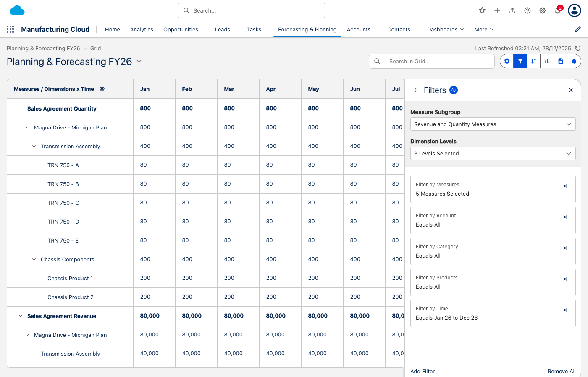
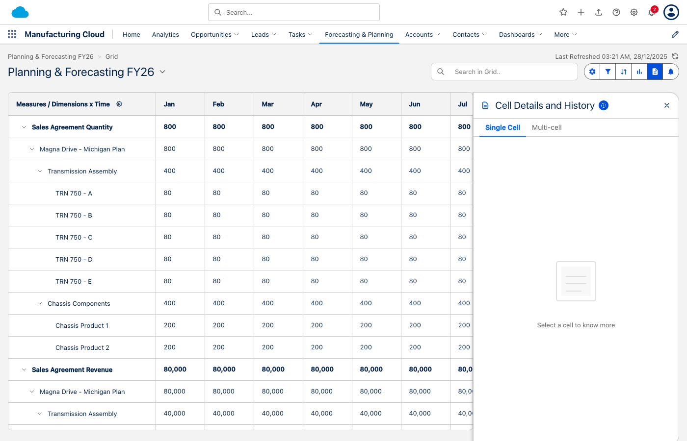
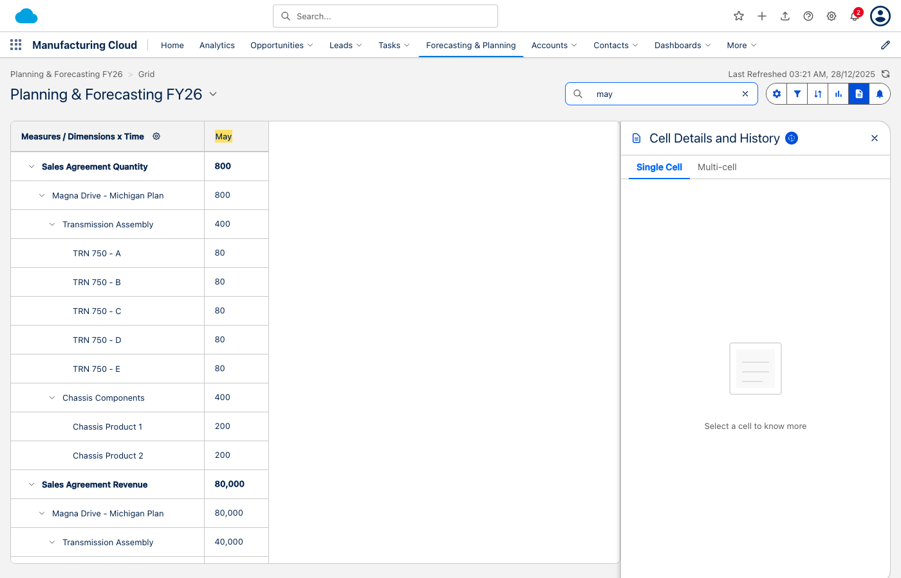

A visual comparison of user experience across our solution and leading enterprise planning tools including Pigment, Anaplan, SAP, Oracle, and Workday.
Our solution demonstrates strong UX fundamentals with modern design patterns, but faces stiff competition from Pigment in the "modern UX" category. We excel in Salesforce ecosystem integration but have opportunities to improve in advanced interactions and polish.
| UX Dimension | Our Solution | Pigment | Anaplan | SAP | Oracle |
|---|---|---|---|---|---|
| Visual Design | 8.0 | 9.5 | 7.0 | 5.0 | 5.5 |
| Grid Interaction | 8.5 | 9.0 | 8.0 | 6.0 | 6.5 |
| Navigation | 8.0 | 8.5 | 7.0 | 5.0 | 5.0 |
| Collaboration UX | 8.5 | 9.0 | 6.5 | 4.5 | 5.0 |
| Learning Curve | 8.5 | 9.0 | 6.0 | 4.0 | 4.0 |
| OVERALL UX SCORE | 8.3 | 9.0 | 6.9 | 4.9 | 5.2 |
Clean, modern grid layout with Salesforce Lightning Design System integration. Features hierarchical row expansion, time-based columns, and clear visual hierarchy.

Pill-shaped button group with clear iconography and active state indicators. Blue icons on white background, reversing when active.
Contextual slide-out panel that doesn't interrupt workflow. Clean form controls with proper spacing and grouping.

Unlike SAP and Oracle which use modal dialogs that block the main interface, our slide-out panels allow users to see context while making changes. This is consistent with modern SaaS patterns used by Pigment and Notion.
Dedicated filtering panel with product and time filter blocks. Each filter shows a summary and opens a multi-select popover on edit.

Salesforce-inspired activity timeline showing edit history with threaded discussions. Each edit shows user, timestamp, value change, and adjustment notes.

Instant search filtering across hierarchies with visual highlighting of matched text. Columns automatically filter to show only relevant time periods.

Real-time filtering as you type, yellow highlighting on matched text, hierarchical awareness (shows parents of matching children)
Basic search with filter buttons, no real-time highlighting, often requires clicking "Apply" button
Two-row header matching Salesforce Lightning template with cloud logo, search bar, navigation tabs, and user icons.
Pigment was founded in 2019 with a UX-first philosophy, specifically designed to disrupt legacy planning tools. Their interface takes inspiration from modern tools like Notion and Figma.
UX Score: 9.0/10 - Sets the standard for modern planning UX
Anaplan has been around since 2006 and their interface shows its age. While functional, it prioritizes power over polish.
UX Score: 6.9/10 - Functional but dated, prioritizes power over usability
SAP's planning tools inherit the complexity of the broader SAP ecosystem. While powerful, the UX is designed for trained administrators rather than business users.
UX Score: 4.9/10 - Power at the cost of usability
Oracle's EPM Cloud modernizes their Hyperion legacy but still carries enterprise complexity. The Redwood design system is improving things gradually.
UX Score: 5.2/10 - Improving but still carries legacy weight
| Capability | Our Solution | Pigment | Anaplan | SAP | Oracle |
|---|---|---|---|---|---|
| Inline cell editing | ✓ Yes | ✓ Yes | ✓ Yes | Partial | Partial |
| Tab/Arrow navigation | ✓ Yes | ✓ Yes | ✓ Yes | Limited | Limited |
| Undo/Redo | ✓ Yes | ✓ Yes | ✓ Yes | No | Limited |
| Copy/Paste multiple cells | Roadmap | ✓ Yes | ✓ Yes | ✓ Yes | ✓ Yes |
| Cell-level comments | ✓ Threaded | ✓ Threaded | Basic | Attachments | Notes |
| Visual change indicator | ✓ Dog-ear | ✓ Dot | Color | None | Color |
| Capability | Our Solution | Pigment | Anaplan | SAP | Oracle |
|---|---|---|---|---|---|
| Multiple grid layouts | 3 Options | Flexible | Custom | Limited | Limited |
| Breadcrumb navigation | ✓ Yes | ✓ Yes | Partial | ✓ Yes | ✓ Yes |
| Slide-out panels | ✓ Yes | ✓ Yes | Modals | Pages | Pages |
| Real-time search | ✓ Yes | ✓ Yes | Basic | No | No |
| Search highlighting | ✓ Yes | ✓ Yes | No | No | No |
| Frozen headers | ✓ Yes | ✓ Yes | ✓ Yes | ✓ Yes | ✓ Yes |
| Aspect | Our Solution | Pigment | Anaplan | SAP | Oracle |
|---|---|---|---|---|---|
| Design system | Salesforce Lightning | Custom Modern | Proprietary | SAP Fiori | Oracle Redwood |
| Typography | Excellent | Excellent | Good | Average | Average |
| Color palette | Modern Blue | Vibrant | Muted | Corporate | Corporate |
| Iconography | Consistent | Custom | Mixed | Fiori Icons | Mixed |
| Spacing/Layout | Well-spaced | Generous | Dense | Cramped | Dense |
| Animations | Basic | Smooth | Minimal | None | Minimal |
| Rank | Solution | Score | Best For |
|---|---|---|---|
| 1 | Pigment | 9.0/10 | Modern companies prioritizing UX |
| 2 | Our Solution | 8.3/10 | Salesforce ecosystem users |
| 3 | Workday Adaptive | 7.5/10 | Workday customers |
| 4 | Anaplan | 6.9/10 | Power users needing flexibility |
| 5 | Oracle EPM | 5.2/10 | Oracle ecosystem enterprises |
| 6 | SAP IBP | 4.9/10 | SAP-centric organizations |
Our solution delivers strong UX that significantly outperforms legacy enterprise tools (SAP, Oracle, Anaplan) while approaching—but not yet matching—the UX excellence of Pigment. Our key differentiator is native Salesforce integration, which provides a familiar experience for the millions of users already in the Salesforce ecosystem. With focused improvements in animations, keyboard shortcuts, and mobile responsiveness, we can further close the gap with Pigment.
UX Comparison Report - Manufacturing Cloud Forecasting & Planning
Screenshots captured December 2025 | Competitor analysis based on public demos and documentation